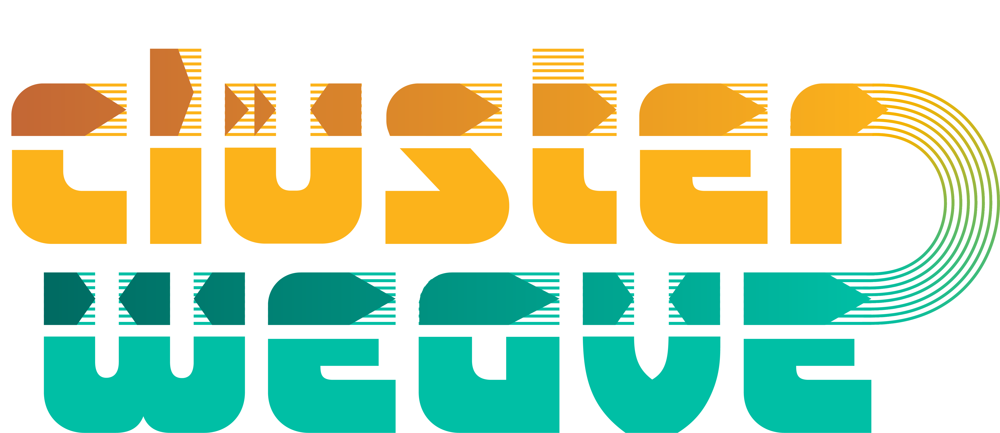

antiSMASHAGPL
Containerized BGC detection with `antismash/standalone:8.0.4`.
Blin et al. antiSMASH 8.0. Nucleic Acids Research 2025. doi:10.1093/nar/gkaf334.

ClusterWeave stages annotation, family context, synteny panels, figures, and downloads in one gated result surface.
Accepted inputs are NCBI assembly accessions, one-accession-per-line .txt lists, and nucleotide FASTA or GenBank genome files. Downstream BGC tools require CDS/protein translations: accessions and FASTA uploads route through funannotate first, while GenBank uploads must include CDS /translation= entries or be paired with a same-stem FASTA. Use public or releasable data only; anyone with the private result link can view that run until it expires.
Use the private result link, or enter the ClusterWeave job ID with its result access code. Recent results are remembered only in this browser tab.
ClusterWeave is a portal to public, open-access biosynthetic discovery tools. We are grateful to the maintainers of these tools and reference datasets. ClusterWeave depends on their public availability and wraps them into a guided workflow so non-coding domain experts can participate in BGC target discovery. Please cite the upstream tools as well as ClusterWeave when outputs support your work.
This list is a processed draft and will grow as more public tools are added to ClusterWeave. The hosted portal avoids restricted optional annotation fallbacks; local command-line users should review `THIRD_PARTY.md` before enabling extra tooling.